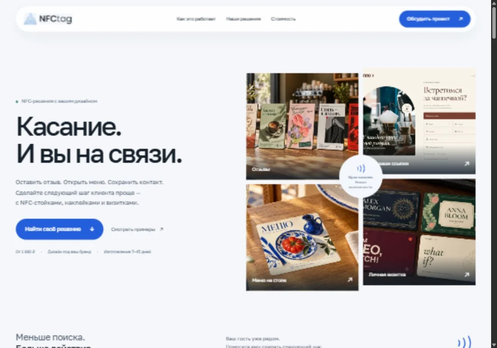

Продукт для малого бизнеса
NFCtag
Как показать владельцу кофейни, что увидит гость после касания телефона к NFC-метке? Собрал витрину с примерами стоек и интерактивными версиями меню, визитки и страницы заявки.
Next.js · React · TypeScript · CSS
